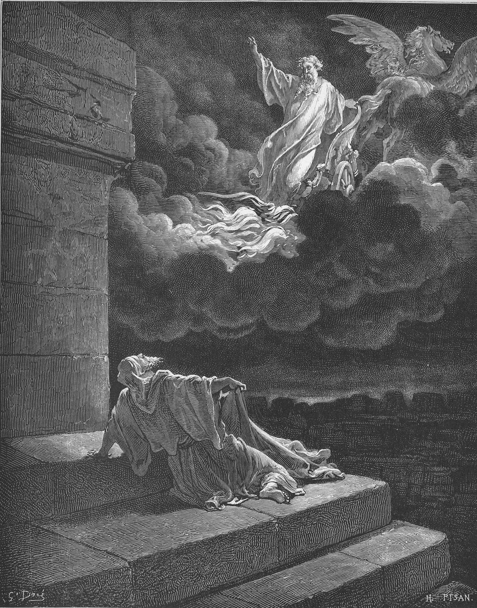

2 Kings 2 — The Mister Translation

2 Kings 2:11–12. This is the picture most readers have, and the Hebrew does not paint it. Doré puts Elijah in the chariot; the verse has the chariot part the two men, and Elijah go up in the whirlwind. The horses are of fire, without wings, and the two men are past the Jordan, not on stone steps.

Translator's Notes — verse by verse
⭐ “When Jehovah was about to take Elijah up”. The first sentence gives away the end. The story is not about whether it will happen but about who will see it, and everyone in the chapter already knows: the sons of the prophets at Bethel, those at Jericho, and Elisha. “Take up” is the verb “go up” made causative, the word 2 Kings 1 (now on these pages) was built on.
⚠ “In the whirlwind”. Se’arah has the article here and at verse 11, as Radak notes at verse 1, and the reader has not been told of any storm. The ASV has “by a whirlwind”, the NIV “in a whirlwind”, and the NWT 1984 “in a windstorm”. The Greek has “in a shaking, as if to heaven”. Its “shaking” is its word for the earthquake at Horeb (1 Kings 19:11–12, now on these pages), and the “as if” is its own.
“From Gilgal … down to Bethel”. The route is Gilgal, Bethel, Jericho, the Jordan, and Israel came into the land by the Jordan, Gilgal and Jericho (Joshua 4:19, now on these pages), so Elijah walks out nearly the way his people walked in. But Bethel stands high, and the Gilgal by the Jordan is low, so “went down” does not fit it. Readers differ: some look for another Gilgal in the hills, and the verse does not say.
“Sit here, please”. Three times, and Elisha is never told why. The NWT 1984 keeps “sit here” at verse 4; the ASV has “Tarry here”, and the NIV “Stay here”. “As Jehovah lives and as your soul lives” stands in six verses of the Hebrew Bible, and three of them are here. David said it to Jonathan (1 Samuel 20:3, now on these pages). The TLB has “I swear to God”, which is not what he says.
⭐ “The sons of the prophets”. See the entry; the phrase first came at 1 Kings 20:35 (now on these pages). The NIV has “The company of the prophets”, and the Geneva “the children of the Prophets”. The TLB has “the young prophets of Bethel Seminary” and, at verse 5, “the students at Jericho Seminary”, and there was no such institution. They are at Bethel, the city of Jeroboam’s calf (1 Kings 12:29, now on these pages), and the text does not explain what prophets of Jehovah are doing there.
“From over your head” and “Keep still”. The ASV has “from thy head”, and the NWT 1984 “from headship over you”; the NIV has “from you”, and the head is gone. “Keep still” is the verb of the king of Israel’s “we are keeping still” (1 Kings 22:3, now on these pages). The ASV has “hold ye your peace”, and the TLB “Quiet!”, with “Elisha snapped”, which the Hebrew does not say.
“Fifty men … stood opposite, far off”. There are witnesses to the crossing, but at a distance. They will not see what Elisha sees. The number is the number of the companies in 2 Kings 1:9 (now on these pages).
⭐ “His mantle”. Adderet: Elijah wrapped his face in it at Horeb and threw it on Elisha at the plough (1 Kings 19:13, 19, now on these pages). The ASV has “his mantle”, the NIV “his cloak”, and the NWT 1984 “his official garment”. The Greek has mēlōtē, a sheepskin, and that word is in Hebrews 11:37 (now on these pages). “Rolled it up” is galam, a verb that stands in one verse of the Hebrew Bible. The ASV has “wrapped it together”, and the Douay “folded it together”.
⭐ “Divided this way and that … on dry land”. Moses had a staff and Elijah has a coat. “Dry land” is charavah, the word of the Red Sea (Exodus 14:21) and of the Jordan under Joshua (Joshua 3:17, both now on these pages). “Divided” is a different verb from the sea’s. The crossing takes them to the side where Moses died (Deuteronomy 34:5, now on these pages), and the chapter will come back to that.
⭐ “A double share of your spirit”. “Ask” is what God said to Solomon (1 Kings 3:5, now on these pages). Pi-shnayim, literally “a mouth of two”, is the firstborn’s share in the law, “a double share of everything he has” (Deuteronomy 21:17, now on these pages): in this sense it stands in three verses of the Hebrew Bible. The firstborn gets two shares to the other sons’ one. He does not get twice what his father had. Elisha is asking to be the heir. The NWT 1984 has “two parts in your spirit”, the ASV “a double portion”, and the NIV “inherit a double portion”, supplying the verb that makes the sense plain. The TLB has “twice as much prophetic power as you have had”, the Douay “thy double spirit”, and the Geneva “thy Spirit be double upon me”, which read it the other way. So does later tradition, which Rashi reports at verse 14.
“You have asked a hard thing”. The condition is to see. Laqach, “take”, is the word for Enoch, “for God took him” (Genesis 5:24, now on these pages), and “Elisha was seeing” is the next thing the Hebrew says.
⭐ “A chariot of fire and horses of fire, and they parted the two of them”. Read it closely: the chariot comes between them, and “Elijah went up in the whirlwind”. The Hebrew does not put him in the chariot, and it has no driver. The picture of the prophet riding to heaven is the painters’ (see the plate above). Radak says what the verse says: the wind lifted him, and the fire was what Elisha was shown. The TLB has “drove between them”, and the NWT 1984 “a fiery war chariot”. At Horeb Jehovah was not in the wind, and not in the fire (1 Kings 19:11–12). Now wind and fire come for Elijah, and the text does not comment.
⚠ “To the heavens”. Shamayim is the word for the sky and for where God is, and the verse does not say which it means, or what became of him. Readers have disagreed for a long time. The Greek has “as if to heaven”. Josephus says only that Elijah “vanished from among men, and no one knows to this day his end”, and sets him beside Enoch (Antiquities 9.28, Niese’s Greek, numbered 9.2.2 in Whiston). Radak reports the common view of his people and sages, that he entered the Garden of Eden in the body, and gives his own: the wind carried him up, his body and clothes burned away, all but the mantle, and his spirit returned to God. Rabbi Yose in the Talmud says that “Moses and Elijah never went up to the height” (Sukkah 5a). John has “no one has gone up into heaven except the one who came down out of heaven” (John 3:13, now on these pages). Against all that, the prophet is promised back at Malachi 3:23, which is 4:5 in English numbering, and he appears with Moses in Mark 9:4 (now on these pages). Chronicles has a letter from him arrive for Jehoram of Judah (2 Chronicles 21:12), and readers differ over its date. This page does not settle any of it.
⭐ “My father, my father, the chariot of Israel and its horsemen!” The cry stands in two verses of the Hebrew Bible: here, and at the bed of the dying Elisha, in the mouth of a king (2 Kings 13:14). It may be what he sees, or what Elijah was: the real strength of Israel. Radak reads it the second way, that with Elijah went Israel’s chariots and horsemen. Rekhev is singular, and may be collective. The KJV has “the chariot of Israel, and the horsemen thereof”, the ASV “the chariots of Israel and the horsemen thereof”, the NWT 1984 “the war chariot of Israel and his horsemen”, and the Douay “the chariot of Israel, and the driver thereof”.
“And he did not see him again”. So the condition of verse 10 was met, and the next verses will test it. “Into two pieces” is mourning, and a second “two” beside the double share.
“The mantle of Elijah that had fallen from him”. It is said twice in two verses, in the same words. Elijah threw it on him at the plough, and now it has fallen and he has to pick it up. The Greek has it fall “from upon Elisha” at verse 13.
⚠ “Where is Jehovah, the God of Elijah?” He too struck the waters. The Hebrew has two more words here, af-hu, “even he”. The Masoretic accents join them to what follows: he too struck. The ASV has “when he also had smitten the waters”, and the NIV “When he struck the water”. The NWT 1984 joins them to the question: “Where is Jehovah the God of Elijah, even He?”. The Greek does not translate them at all. It copies the letters, aphphō. It also has a first attempt fail, “and it did not part”, and the Douay agrees, “and they were not divided”. The Hebrew has no such failure. The Targum has “Accept my petition, Jehovah, God of Elijah”.
“This way and that”. The words of verse 8, and now one man crosses where two did. He goes back the way Israel came in.
⭐ “The spirit of Elijah has come to rest on Elisha”. Nachah is the word for the spirit on the seventy elders, “when the spirit rested on them” (Numbers 11:25, now on these pages). The ASV has “doth rest”, and the NWT 1984 “has settled down”. They say this from what they saw at the river. The Douay has “they worshipped him”, and the TLB “greeted him respectfully”; the Hebrew verb is the ordinary one for bowing down, and the verse says how far: to the ground.
“In case the spirit of Jehovah has lifted him up”. The sons of the prophets, who knew he was to be taken, do not take it that he has gone for good. They think he may have been dropped on a mountain, and Obadiah feared the same (1 Kings 18:12, now on these pages). Ruach is also “wind”, as a footnote in the Reference edition of the NWT 1984 says, and its text has “the spirit of Jehovah”. The ASV has “the Spirit of Jehovah”, with a capital. “Fifty men, sons of might” is the ASV’s “fifty strong men”, the NIV’s “fifty able men”, and the TLB’s “fifty of our best athletes”. “Valleys” is what is read; the Hebrew writes another spelling (ketiv and qere).
⭐ “And they sought three days and did not find him”. On this side of the Jordan Moses died, “and no one knows his burial place to this day” (Deuteronomy 34:6, now on these pages). Fifty men look for Elijah’s, and there is no burial place to know. “Until he was ashamed” is the ASV’s “till he was ashamed”, and the NIV has “too embarrassed to refuse”, and the Douay “till he consented”.
“And he was sitting in Jericho”. Elijah told him three times to sit, and he would not. Now he is sitting. The TLB has “he growled”; the Hebrew has “he said”.
⚠ “The land bereaves”. The word is meshakkelet, from shakal, to lose children. This spelling stands in four verses of the Hebrew Bible, and two of them are here. The ASV has “the land miscarrieth”, and the NWT 1984 “the land is causing miscarriages”. The KJV has “the ground barren”, and the NIV “the land is unproductive”, which changes the loss from children to crops. Josephus has both: the spring harmed the fruit of the ground and the children of women (Jewish War 4.460, Niese’s Greek, numbered 4.8.3 in Whiston). The city is Jericho, and Joshua had sworn that its rebuilder would pay with his firstborn (Joshua 6:26), and Hiel did (1 Kings 16:34, both now on these pages). The Hebrew does not connect the water to that, but a reader may.
“A new jar”, and salt. Tselochit stands in one verse of the Hebrew Bible, so what it looked like is a guess. The ASV has “a new cruse”, the NIV “a new bowl”, the NWT 1984 “a small new bowl”, and the Douay “a new vessel”. Melach is the salt of the covenant (Leviticus 2:13) and the salt Abimelech sowed on a city (Judges 9:45, both now on these pages). Here it heals. Moses threw a tree into the bad water at Marah (Exodus 15:25, now on these pages).
⭐ “Thus says Jehovah: I have healed this water”. This is the first “Thus says Jehovah” in Elisha’s mouth, and the first person is Jehovah’s: he healed it, and Marah ended with “I am Jehovah your healer” (Exodus 15:26, now on these pages). The ASV has “I have healed these waters”, the NIV “I have healed this water”, and the NWT 1984 “I do make this water healthful”. “Death or bereaving” is the ASV’s “death or miscarrying”.
“To this day, according to the word of Elisha”. Josephus tells a longer version: the salt in a jar of clay, the right hand raised to heaven, libations on the ground, and a prayer that the water would last while the people stayed just (Jewish War 4.459–464). The verse credits the word to Elisha, and he credited it to Jehovah.
⚠ “Little youths” and “children”. Ne’arim qetannim is the phrase Solomon uses of himself as a reigning king, “a little youth” (1 Kings 3:7, now on these pages), and na’ar covers a wide span of age and standing. Yeladim, at verse 24, is the word for Rehoboam’s advisers, “the young men who had grown up with him” (1 Kings 12:8, now on these pages). So the words do not give an age, and the shelf covers the whole range. The KJV has “little children”, the Douay “little boys”, the NWT 1984 “small boys”, the ASV “young lads”, the NIV “some boys”, and the TLB “a gang of young men”. The Greek has “little children”. The Hebrew can be read as any of these, and the reader should not be told otherwise.
“Go up, baldhead!” Qereach is a bald man, and the law says he is clean (Leviticus 13:40, now on these pages). Elijah was “A man possessed of hair” (2 Kings 1:8, now on these pages), and his heir is not. “Go up” is the chapter’s word. Many readers hear a taunt at what happened at the Jordan: go up, as your master did. Others hear only “be off”, as the NIV has it, “Get out of here, baldy!”. The Talmud reads the taunt as “you have made the place bald for us”, which its commentators take to mean that people who sold water lost their trade when he healed the spring (Sotah 46b). The verse gives no reason.
⚠ “And he cursed them in the name of Jehovah”. The text sets the curse beside the bears and says nothing else. It does not say Jehovah sent them. There is no “according to the word”, as there was at verse 22. It offers no comment on Elisha. “She-bears” comes from the Hebrew’s feminine numeral and verb; the ASV has “two she-bears”, the NIV “two bears”, and the Greek has two bears as well. “Tore” is baqa, to split, and the verb of “the waters were split” (Exodus 14:21). “Forty-two children of them” means there were more. The verse does not say they died, and most readers take it that they did. The KJV has “tare forty and two children of them”, and the NWT 1984 “went tearing to pieces forty-two children”. The word for a dangerous bear in Hebrew is “bereaved” (2 Samuel 17:8, now on these pages; Proverbs 17:12 and Hosea 13:8). That is the root of verses 19 and 21: the chapter that heals a bereaving land ends with parents who have lost children.
⭐ What the tradition did with it. Readers’ unease with this passage is not new. Rabbi Elazar in the Talmud takes “ne’arim” as “shaken empty” of the commandments, and “little” as little of faith, and Rashi repeats it. The sages add that they were grown, and behaved like children, and Rav Yosef objects (Sotah 46b). Rav and Shmuel argue over whether the forest was a miracle too (Sotah 47a). And the same tradition charges Elisha. “Elisha fell ill three times”, the Talmud says, and the first time was “for inciting the bears to attack the children” (Sotah 47a); Rashi says he was punished for it. The Hebrew passes no verdict, and neither does this page.
“To Mount Carmel, and from there he returned to Samaria”. Elijah’s mountain (1 Kings 18:19, now on these pages), and the king’s city. Elisha now walks Elijah’s road alone.
Patterns worth carrying forward
Where this translation keeps the words exact and distinct: “the whirlwind”, with the article; “to the heavens”; “sit here” and “he was sitting”; “from over your head”; “Keep still”, as at 1 Kings 22:3; “mantle”; “a double share”, as in Deuteronomy 21:17; “taken”, as of Enoch; “the chariot of Israel and its horsemen”, in the singular; “He too struck”, with the Masoretic accents; “has come to rest”; “sons of might”; “the land bereaves” and “bereaving”; “little youths”, as at 1 Kings 3:7; and “two she-bears”. The written and read Hebrew are recorded at verse 16.
Echoes paid. “Go up” (2 Kings 1); the mantle (1 Kings 19:13, 19); the earthquake, the wind and the fire (1 Kings 19:11–12); the sons of the prophets (1 Kings 20:35); “keeping still” (1 Kings 22:3); dry land (Exodus 14:21; Joshua 3:17); the double share (Deuteronomy 21:17); “Ask” (1 Kings 3:5); “took him” (Genesis 5:24); the spirit carrying a man away (1 Kings 18:12); the spirit that rested (Numbers 11:25); no one knows his burial place (Deuteronomy 34:6); the curse on Jericho (Joshua 6:26; 1 Kings 16:34); Marah (Exodus 15:25–26); the salt (Leviticus 2:13; Judges 9:45); “a little youth” (1 Kings 3:7); the young men (1 Kings 12:8); the man of hair (2 Kings 1:8); and the bereaved bear (2 Samuel 17:8).
Echoes planted. “My father, my father” (2 Kings 13:14); Elijah’s letter (2 Chronicles 21:12); Elijah promised back (Malachi 3:23); and “I am as you are”, which comes in the next chapter (2 Kings 3:7, now on these pages). None of the others is translated here yet.
Next in this book: 2 Kings 3 — Moab rebels; Jehoram of Israel goes up with Jehoshaphat and the king of Edom; the army has no water; and Elisha asks for a harpist.